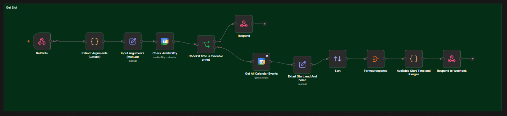
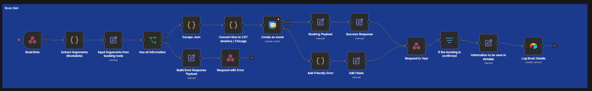
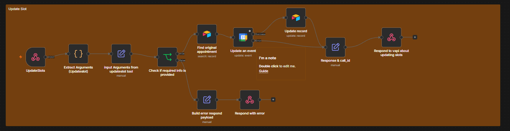
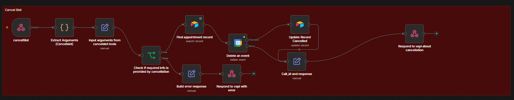
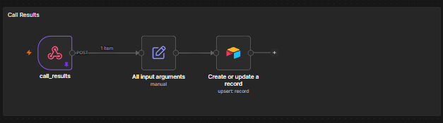

1
Check Availability
The workflow receives the requested date, checks Google Calendar, and either confirms the requested time or formats available alternatives for Vapi.

A voice driven scheduling system that checks real time availability, books appointments, manages changes, records call results, and keeps Google Calendar and Airtable synchronized through n8n.
Vapi handles the caller conversation while n8n performs the scheduling work. Structured webhook requests connect the voice assistant to calendar availability, booking, rescheduling, cancellation, and call record workflows.
Watch the AI receptionist check real time availability, book an appointment, update or cancel a schedule, and save the final call result through one connected workflow.
Five workflow tools support the appointment lifecycle. Every request validates the input and returns a structured response to the voice assistant.
The workflow receives the requested date, checks Google Calendar, and either confirms the requested time or formats available alternatives for Vapi.

Required caller information is validated, the time is converted to the configured time zone, a Google Calendar event is created, and confirmed bookings are stored in Airtable.

The workflow locates the original Airtable appointment, updates the connected calendar event and record, then returns the result and call identifier to Vapi.

The original record is located, the calendar event is deleted, Airtable is marked as cancelled, and Vapi receives a success or friendly error response.

At the end of the interaction, structured call arguments are captured and a call record is created or updated in Airtable for follow up and reporting.

The overview explains the complete appointment lifecycle while the workflow image shows all five n8n tools.


| Tool | Role in the Solution |
|---|---|
| Vapi | Runs the voice conversation and calls the scheduling tools. |
| n8n | Validates inputs, runs scheduling logic, and returns webhook responses. |
| Google Calendar | Provides availability and stores appointment events. |
| Airtable | Stores appointment, client, status, and call result records. |
| Webhooks | Connect Vapi tool calls with each n8n scheduling workflow. |
Before production use, the assistant should be tested for scheduling accuracy, privacy, reliability, and platform requirements.
View the project visuals or return to the AI Automation portfolio.